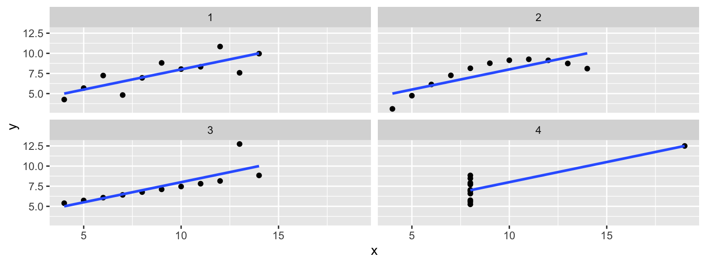
Data Visualization in R
Goals of the lecture
- Data visualization and exploratory data analysis (EDA).
- Basic principles of data visualization.
ggplot: theory and practice.- Other plotting add-ons (
ggridges,ggcorrplot).
What is data visualization?
Data visualization is the process (and result) of representing data graphically.
We’ll be focusing on common visualization techniques, such as:
- Histograms.
- Scatterplots.
- Barplots.
- Boxplots.
Why visualization?
Data visualization serves (at least) a few different purposes:
- Exploratory data analysis (EDA): discovering relationships in your data, generating hypotheses, confirming intuitions.
- Communicating insights: given some finding, conveying that clearly and accurately.
- Impacting the world: a good (or bad) visualization can change attitudes!
EDA: Checking your assumptions
DataViz: impacting the world (1)
Florence Nightingale (1820-1910) was a social reformer, statistician, and founder of modern nursing.
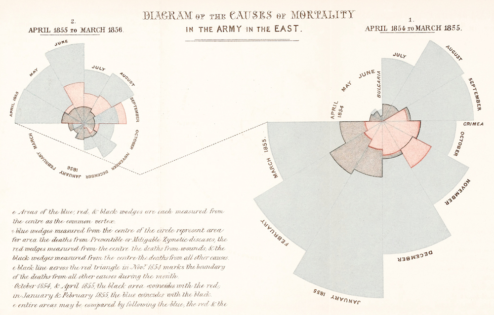
DataViz: impacting the world (2)
John Snow (1813-1858) was a physician whose visualization of cholera outbreaks helped identify the source and spreading mechanism (water supply).

What makes a good data visualization?
Edward Tufte argues:
Graphical excellence is the well-designed presentation of interesting data—a matter of substance, of statistics, and of design … [It] consists of complex ideas communicated with clarity, precision, and efficiency. … [It] is that which gives to the viewer the greatest number of ideas in the shortest time with the least ink in the smallest space … [It] is nearly always multivariate … And graphical excellence requires telling the truth about the data. (Tufte, 1983, p. 51).
Some principles:
- Use your ink wisely.
- Be true to the data.
- Consider the visual logic of the figure.
- Order matters.
- Keep scales consistent.
Principle 1: Use your ink wisely
- Every element in your visualization should serve a purpose.
- Remove “chart junk”: unnecessary gridlines, borders, 3D effects, decorations.
- Maximize your data-ink ratio: the proportion of ink used to display actual data.
Principle 2: Be true to the data
- Don’t manipulate scales to exaggerate or hide effects.
- Include zero baseline for bar charts (unless there’s good reason not to).
- Avoid cherry-picking data or timeframes.
- Represent uncertainty when appropriate (e.g., error bars, confidence intervals).
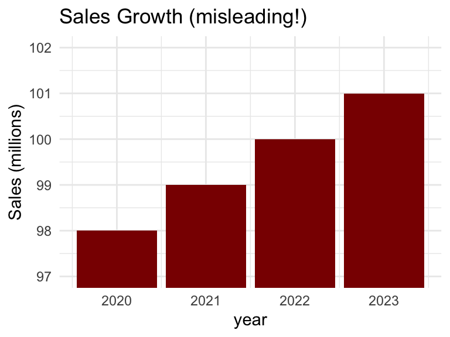
Principle 3: Consider the visual logic
- Position is probably easiest to judge accurately.
- Angle and area are harder (e.g., pie charts).
- Color hue can work for categorical data.
- Use distinctive and meaningful colors!
- Stacked bar plots often hard to interpret!
Principle 4: Order matters
- For categorical data: order by frequency or a meaningful sequence.
- For ordinal data: maintain the natural order (e.g., Strongly Disagree → Strongly Agree).
- For time series: always order chronologically.
Principle 5: Keep scales consistent
- Use the same axis ranges for meaningful comparison.
- In faceted plots, decide: fixed scales (scales = “fixed”) or free scales (scales = “free”)?
- Free scales can be misleading but useful when ranges differ greatly.
ggplot2: theory and practice
ggplot2is a system for creating graphics, based on the Grammar of Graphics.
Just like natural language has a grammar (nouns, verbs, adjectives), graphics have a grammar too:
- Data: What you want to visualize.
- Aesthetics (
aes): How variables map to visual properties (x, y, color, size). - Geometries (
geom): The type of plot (points, lines, bars). - Scales: Control how aesthetic mappings appear.
- Facets: Split into multiple subplots.
- Themes: Control non-data appearance (fonts, backgrounds).
Anatomy of a “ggplot”
Every ggplot needs, at minimum:
- Data: a dataframe or tibble.
- Aesthetic mappings: which variables map to which visual properties.
- Geometry: how to represent the data visually.

Histograms
A histogram is a visualization of a single continuous, quantitative variable (e.g., income or temperature).
A histogram can be created with geom_histogram.
mpg %>%
ggplot(aes(x = cty)) +
geom_histogram()`stat_bin()` using `bins = 30`. Pick better value with `binwidth`.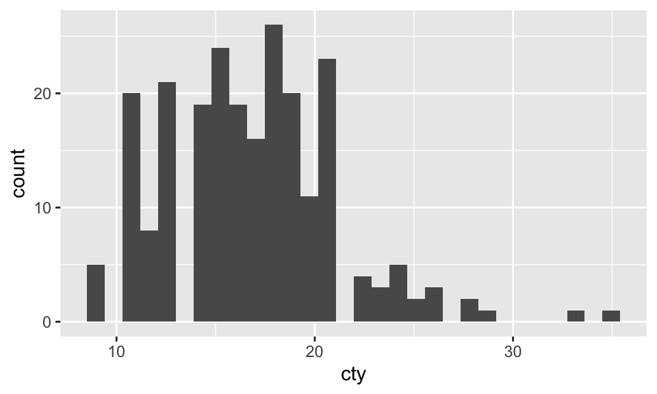
Histograms
A histogram is a visualization of a single continuous, quantitative variable (e.g., income or temperature).
A histogram can be created with geom_histogram.
Histograms are very useful!
Histograms show important visual information about a distribution:
- Shape: is it symmetric, skewed, etc.?
- Center: Where is the “typical” value?
- Spread : How variable is the data?
- Outliers: Are there unusual values?
Histograms vs. density plots
A density plot is a smoothed alternative to a histogram, created using kernel density estimation (KDE).
A density plot can be created with geom_density.
ggplot(mpg, aes(x = cty)) +
geom_density(fill = "steelblue") 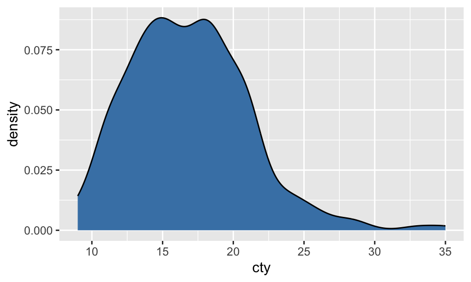
Overlaying multiple distributions
One benefit of a density plot is that it’s easier to overlay multiple distributions on the same plot. The alpha parameter controls the opacity of each distribution.
mpg %>%
filter(class %in% c("compact", "suv")) %>%
ggplot(aes(x = cty, fill = class)) +
geom_density(alpha = .5) +
labs(title = "City MPG: Compact vs. SUV", fill = "Car Type") +
theme_minimal()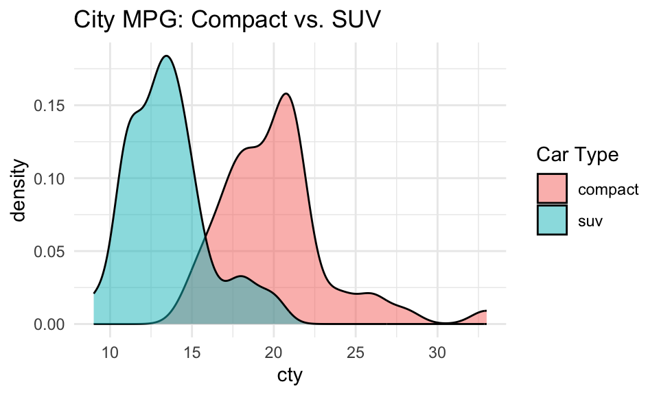
Scatterplots
A scatterplot shows the relationship between two continuous variables, where each point represents an observation.
A scatterplot can be created with geom_point.
mpg %>%
ggplot(aes(x = cty, y = hwy)) +
geom_point() 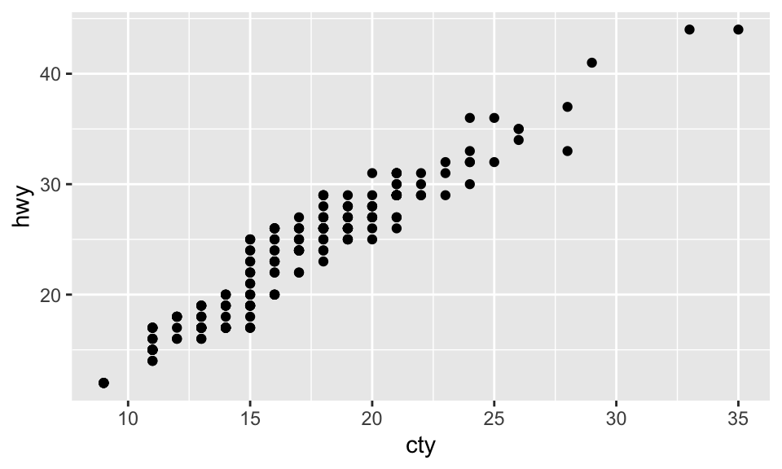
Adding layers to a scatterplot
We can further modify the color, size, and shape of individual dots.
mpg %>%
ggplot(aes(x = cty, y = hwy, color = class, size = cyl, shape = drv)) +
geom_point(alpha = .5) 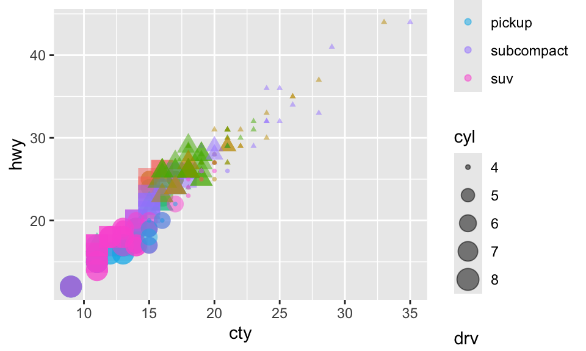
Plotting a regression line
We can also use geom_smooth to plot a regression line (or another non-linear function) over our scatterplot.
(If there are multiple colors, etc., a different line will be plotted for each color.)
mpg %>%
ggplot(aes(x = cty, y = hwy)) +
geom_smooth(method = "lm") +
geom_point(alpha = .5) `geom_smooth()` using formula = 'y ~ x'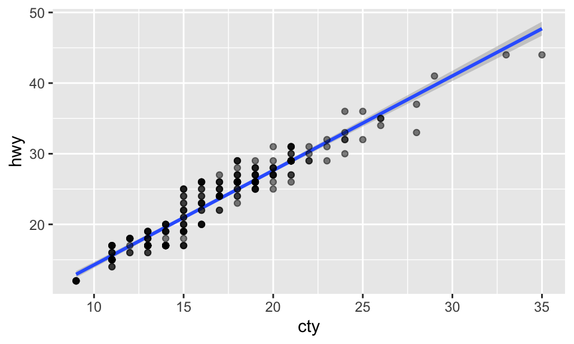
Bar plots
A barplot visualizes the relationship between one continuous variable and (at least one) categorical variable.
A barplot can be created with geom_bar.
- By default,
geom_barwill count occurrences (like a histogram for categorical variables). - You can also calculate values like the
meanusinggeom_bar(stat = "summary"). - If you already have values computed (e.g., a mean or count), you can use
geom_color `geom_bar(stat = “identity”).
Bar plots: counts
By default, geom_bar will count the occurrences of each class.
mpg %>%
ggplot(aes(x = drv)) +
geom_bar() +
theme_minimal()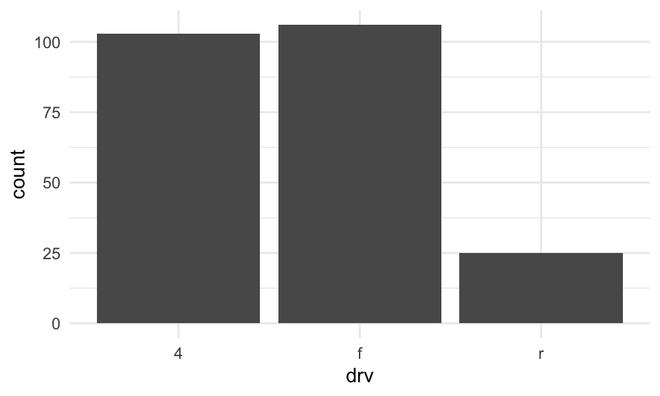
Bar plots: summaries
You can also calculate summary statistics, i.e., the mean of some y variable for each level of the x variable.
Use reorder to reorder the bars in terms of their values.
mpg %>%
ggplot(aes(x = reorder(drv, hwy), y = hwy)) +
geom_bar(stat = "summary", fun = "mean") +
theme_minimal()
Bar plots with group_by
Alternatively, you can calculate summary statistics using group_by %>% summarise, and pipe the output into a ggplot call.
mpg %>%
group_by(drv) %>%
summarise(mean_hwy = mean(hwy)) %>%
ggplot(aes(x = reorder(drv, mean_hwy), y = mean_hwy)) +
geom_bar(stat = "identity") +
theme_minimal()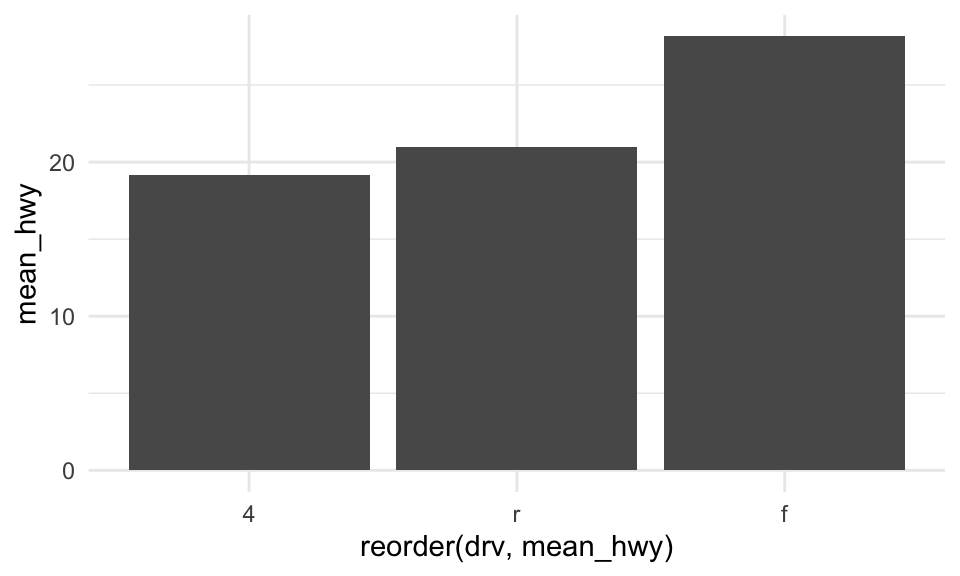
Error bars: stat_summary
Often, you want to display some measure of dispersion in addition to the mean. One approach is to use stat_summary.
mpg %>%
ggplot(aes(x = reorder(drv, hwy), y = hwy)) +
geom_bar(stat = "summary", fun = "mean") +
stat_summary(fun.data = mean_se, geom = "errorbar", width = 0.2) +
labs(x = "Drive Type", y = "Mean Highway MPG") +
theme_minimal()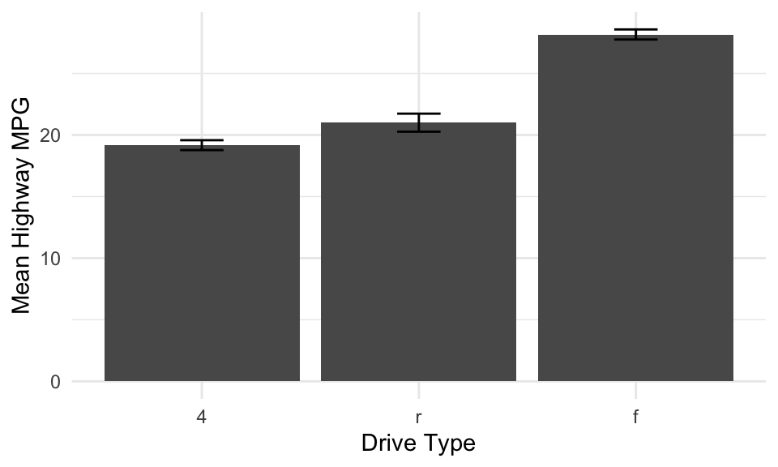
Error bars with group_by
Alternatively, with the group_by method, you can use first calculate the standard error, then pipe the result into geom_errorbar.
mpg %>%
group_by(drv) %>%
summarise(
mean_hwy = mean(hwy),
se_hwy = sd(hwy) / sqrt(n())
) %>%
ggplot(aes(x = reorder(drv, mean_hwy), y = mean_hwy)) +
geom_bar(stat = "identity") +
geom_errorbar(aes(ymin = mean_hwy - se_hwy,
ymax = mean_hwy + se_hwy),
width = 0.2) +
labs(x = "Drive Type", y = "Mean Highway MPG") +
theme_minimal()
Error bars with group_by
Alternatively, with the group_by method, you can use first calculate the standard error, then pipe the result into geom_errorbar.
Bar plots with fill
You can add further information to a barplot using the fill parameter. Use position_dodge to show the bars side by side (rather than stacked).
mpg %>%
ggplot(aes(x = reorder(drv, hwy), y = hwy, fill = class)) +
geom_bar(stat = "summary", fun = "mean", position = position_dodge(width = 0.9)) +
stat_summary(fun.data = mean_se,
geom = "errorbar",
position = position_dodge(width = 0.9),
width = 0.2) +
theme_minimal()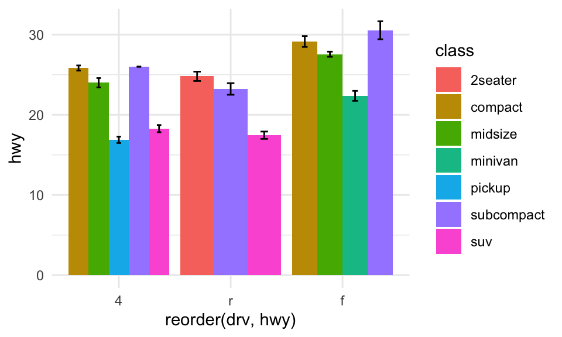
Boxplots and violin plots
Boxplots and violin plots show more detailed information about underlying distribution for a given category.
- A boxplot shows the
median, along with the inter-quartile range. - A violinplot shows the full distribution as a density curve, rotated and mirrored.
- As with barplots, you can also modify the color of each box/violin.
Boxplots with geom_boxplot
mpg %>%
ggplot(aes(x = reorder(drv, hwy), y = hwy)) +
geom_boxplot() +
theme_minimal()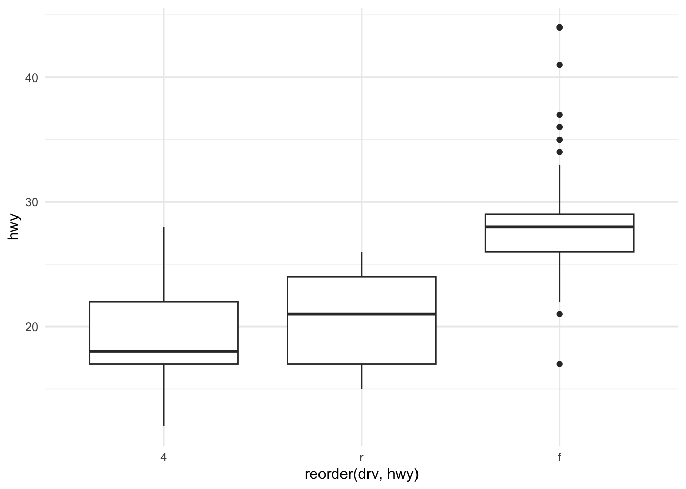
Violin plots with geom_violin
mpg %>%
ggplot(aes(x = reorder(drv, hwy), y = hwy)) +
geom_violin() +
theme_minimal()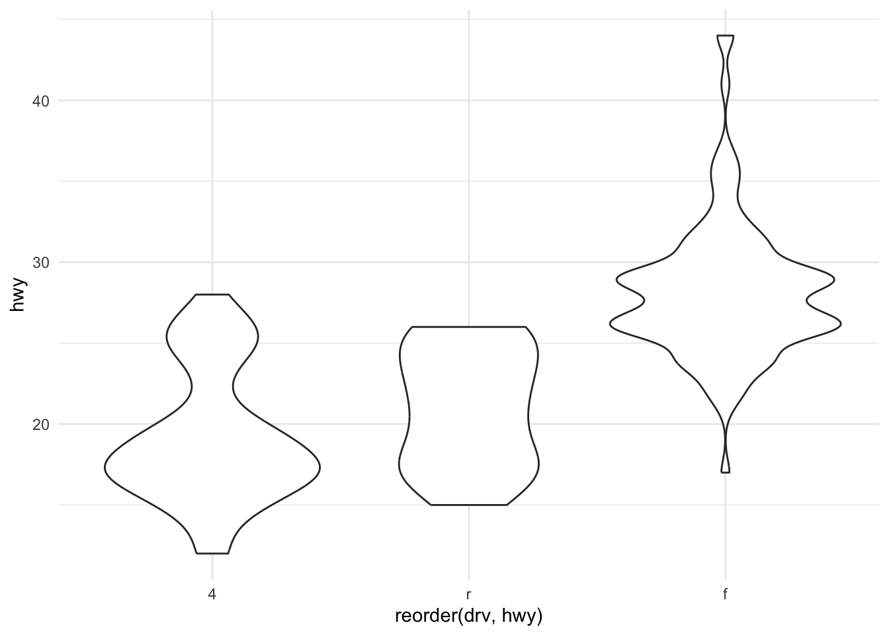
Adding styling to a plot
Let’s revisit a plot we worked on earlier, with better labels and styling.
mpg %>%
ggplot(aes(x = cty, y = hwy, color = drv, size = cyl, shape = drv)) +
geom_point(alpha = .5) +
labs(x = "City mpg",
y = "Highway mpg",
size = "Number of cylinders",
color = "Drive Train",
shape = "Drive Train") +
theme_minimal() +
scale_color_viridis_d() +
theme(
axis.title = element_text(size = 16),
legend.title = element_text(size = 12),
legend.text = element_text(size = 10)
)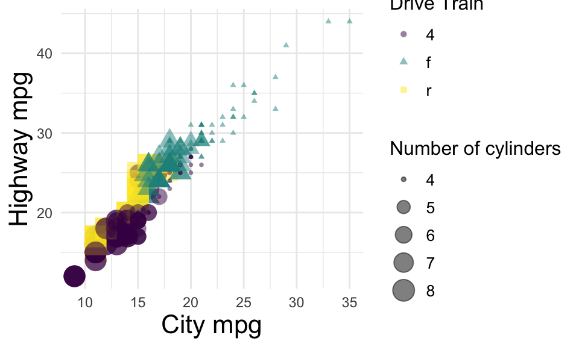
Labeling specific points
Let’s revisit a plot we worked on earlier, with better labels and styling.
mpg_labeled <- mpg %>%
filter(hwy > 42) %>%
filter(class == "compact")
mpg %>%
ggplot(aes(x = cty, y = hwy, color = drv, size = cyl, shape = drv)) +
geom_point(alpha = .5) +
geom_text(data = mpg_labeled,
aes(label = model),
hjust = 1.2, vjust = 0,
size = 4,
color = "black",
show.legend = FALSE) +
theme_minimal(base_size = 14)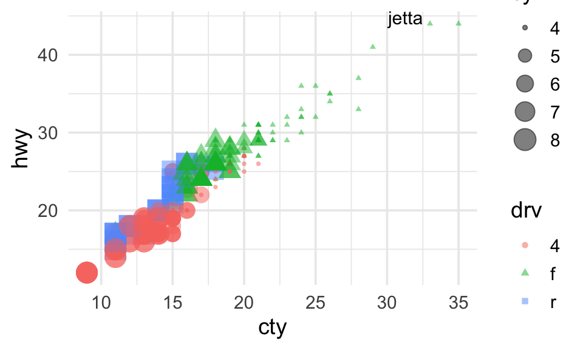
Other plotting packages
ggplot has a ton of useful functions and geom types, and it’s probably all you “need”——but there are other options too.
ggcorrplot: gg-style correlation matrices.ggridges: gg-style “ridge” plots (density plots).
Using ggcorrplot
ggcorrplotis a library (and function) that visualizes a correlation matrix.
library(ggcorrplot)
cor_matrix = mpg %>%
select(hwy, cty, displ, cyl) %>%
cor()
ggcorrplot(cor_matrix)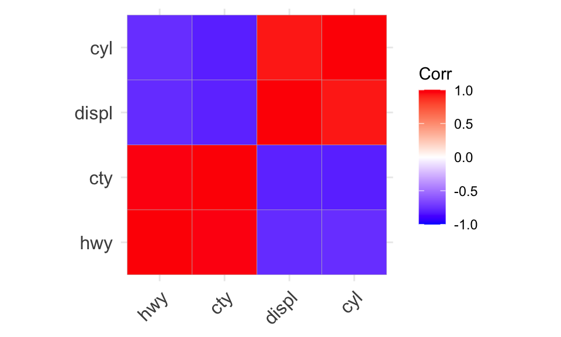
Using ggridges
ggridgesis a library for arranging density plots in a staggered fashion.
library(ggridges)
mpg %>%
ggplot(aes(x = hwy, y = reorder(class, hwy), fill = drv)) +
geom_density_ridges(alpha = .7, color = NA) +
theme_ridges()Picking joint bandwidth of 2.29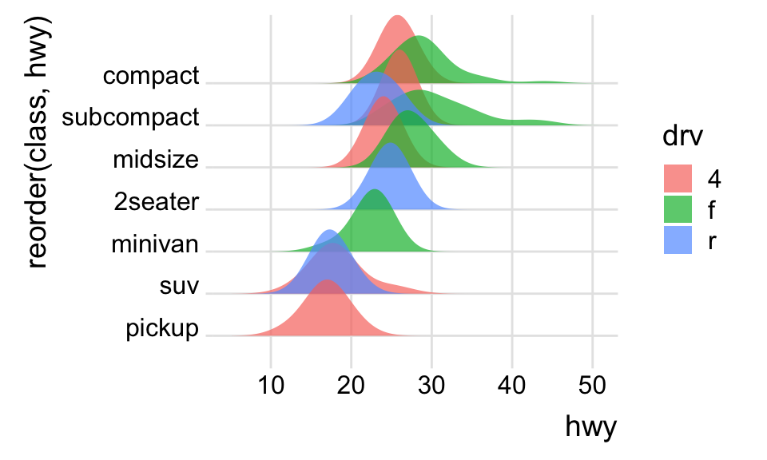
Summary
- Data visualization is central to CSS.
- Crucial for exploring data, communicating insights, and impacting decisions.
ggplotis a versatile and powerful library for creating clear, elegant figures.- R also supports a number of additional libraries for visualization.
- The best way to learn to make visualizations is to make them!